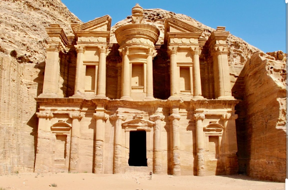

Maravillas del Mundo Moderno
Petra Jordan
Petra es un importante enclave arqueológico en Jordania. la capital del antiguo Reino Nabateo. El nombre de Petra significa piedra, y su nombre es idóneo ya que no se trata de una cuidad construida con piedra, si no literalmente excavada y esculpida en la piedra.
Los restos más célebres de Petra son sin duda sus construcciones labradas en la misma roca del valle.
© Copyrigth 2021. Todos los derechos Reservados. Venezuela